01
日本各地で食事会・イベント
東京・名古屋・大阪・福岡で、新しい仲間と出会える食事会を多数開催。メンバー共催イベントや、幅広いテーマの毎週ウェビナーも。
東京6回+名古屋4回+大阪4回+福岡4回+毎週ウェビナー
経営者・起業家のための、
世界とつながるコミュニティ
日本だけでなく、世界での体験を通じて視野が広がり、共に成長し、全世界に仲間ができていく。
登録無料・1分／入会は招待制
海外ツアーを
年間開催
サロンの世界観と空気感を、1本の動画にまとめました。
起業して、経営を続けた——その先に待っているのが“孤独”では、もったいない。
事業の本音を、対等に語り合える相手が周りにいない。
大事な意思決定を、いつも一人で抱え込んでいる。
成果を出しても、心から分かち合える仲間がいない。
同じ顔ぶれ・同じ景色の中で、視野が広がらない。
その“孤独”を、世界中の仲間と超えていく。
日本だけでなく、世界での体験を通じて、多様な仲間と通じ合う。
視野が広がり、自分が成長し、全世界に仲間が増えていく。
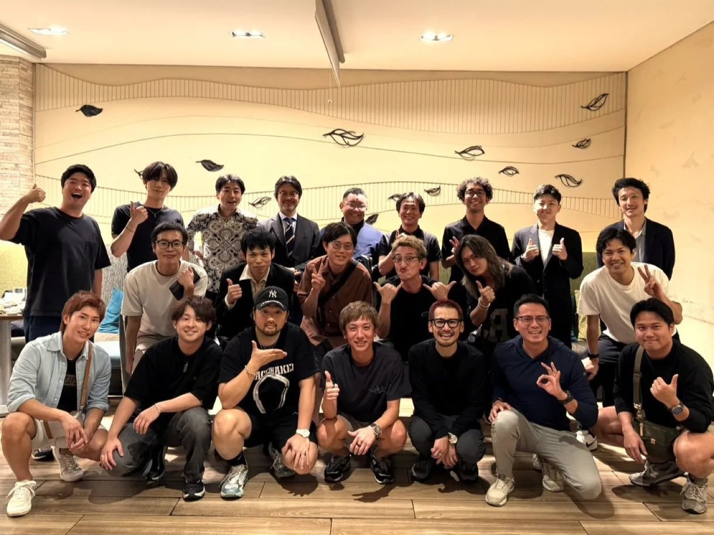
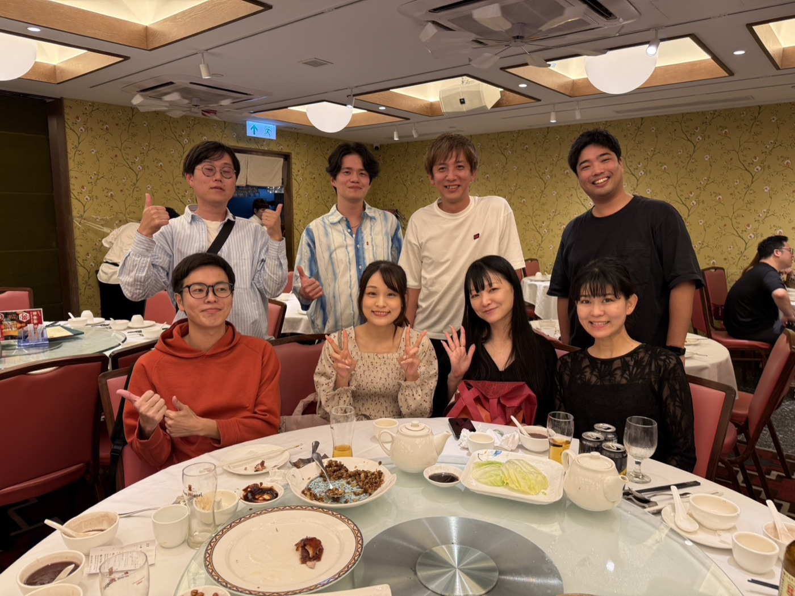
全世界に、一緒に遊び、共に成長できる仲間を。
そんな日々は、最高じゃないですか。
「新しい体験」と「新しい出会い」。この2つを軸に、優秀な仲間が増え、人として成長し、ビジネスが広がっていく。
東京・名古屋・大阪・福岡で、新しい仲間と出会える食事会を多数開催。メンバー共催イベントや、幅広いテーマの毎週ウェビナーも。
海外ツアーは年6回以上。世界に住む現地在住の仲間と出会い、共に新しい体験をしながら関係を深めていける。
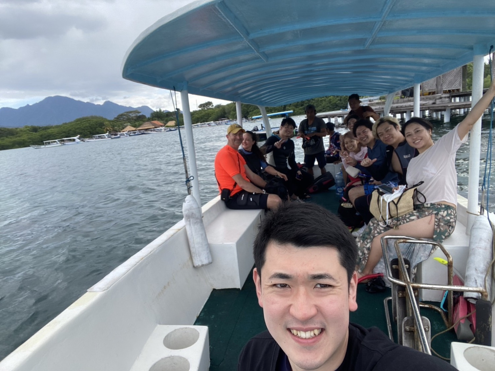
繋がりたい仲間がいたら嶋に個別相談。嶋が直接お繋ぎすることで、質の高い丁寧なマッチングが実現します。
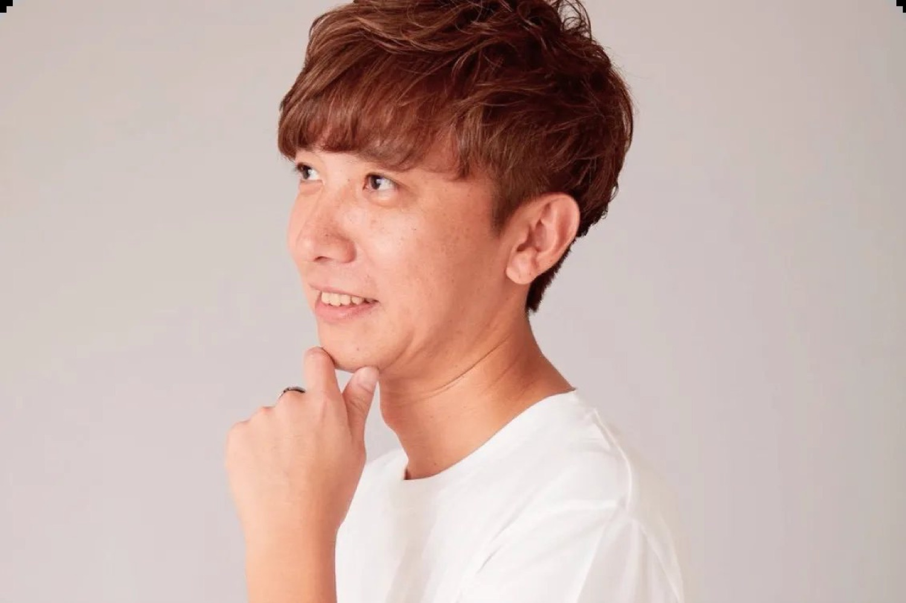
Shima Salon の LINE グループに呼びかけることで、自分で能動的に仲間を見つけることができる。
LINE グループに拡散したいことを投稿すると、可能なメンバーが X で引用・リポストし、発信を後押ししてくれる。
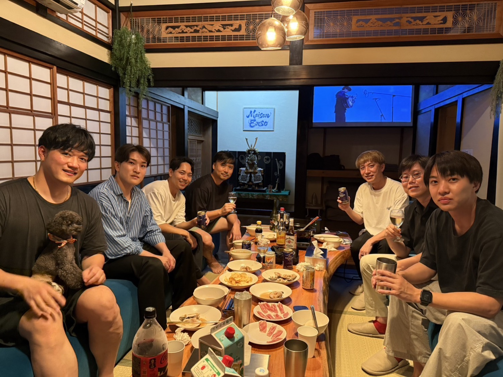
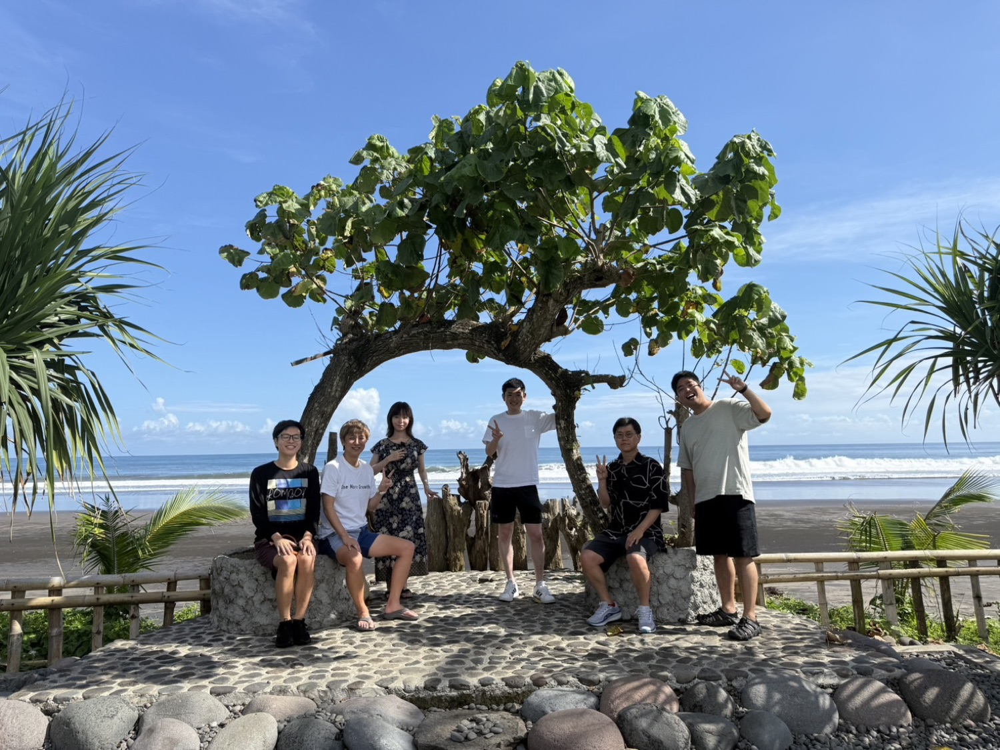
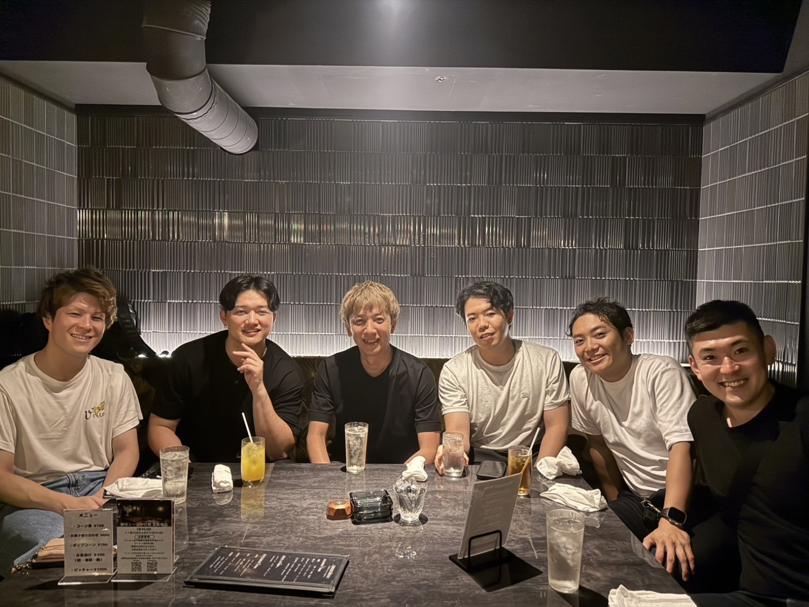
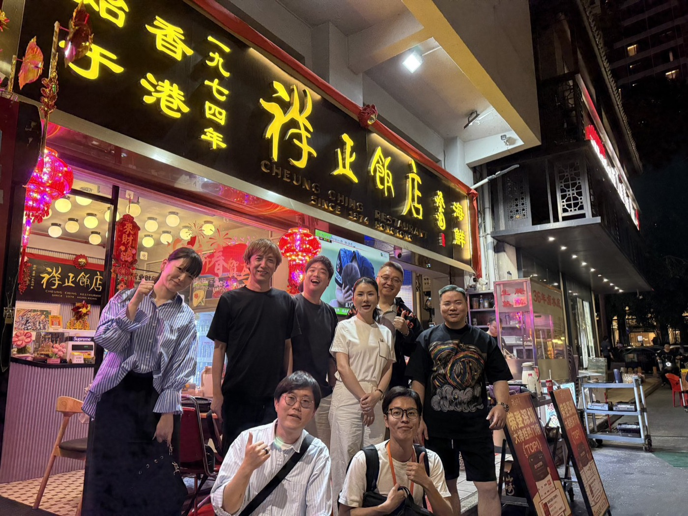
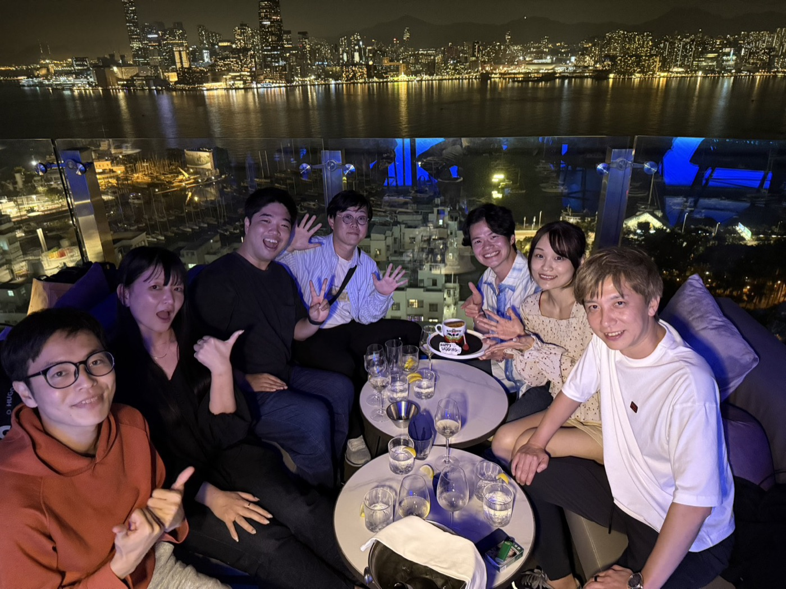
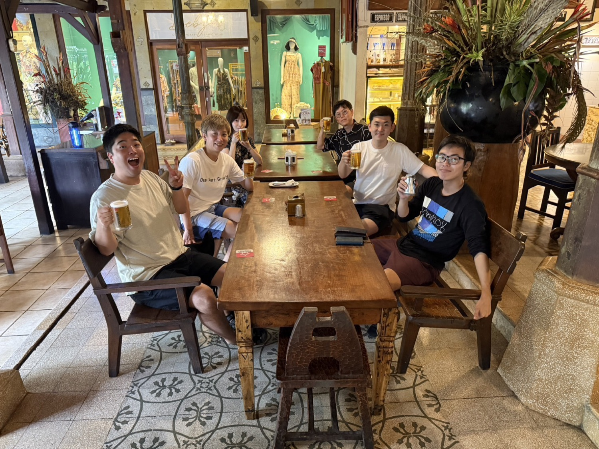
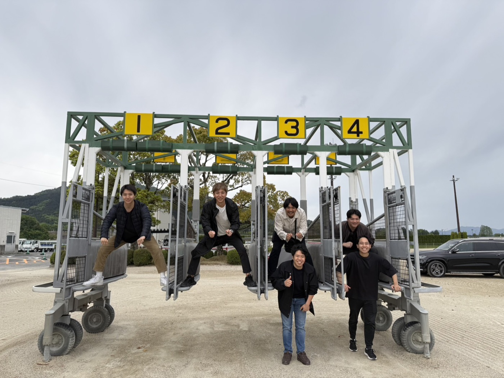
参加した経営者たちに、実際に何が起きたのか。
Shima Salon に参加したことで視野が大きく広がり、嶋さんやサロン内の仲間からのアドバイスをきっかけに起業。その過程で出会った方が現在は顧問として事業をけん引してくださっています。通常の起業支援にとどまらず、海外展開を見据えた動き方まで意識できるようになり、事業の成長スピードが格段に上がりました。
参加イベント：東京4回、シンガポール1回、ジャカルタ2回、インド1回
Shima Salon に参加してから、「仲間とつくる事業」を意識するようになりました。以前は一人で完結するつもりでしたが、嶋さんとの出会いで考え方が変わり、仲間の熱量にも刺激を受けました。起業1年で事業転換し、今は2人の正社員と挑戦中です。続きはSalonで話しましょう！（笑）
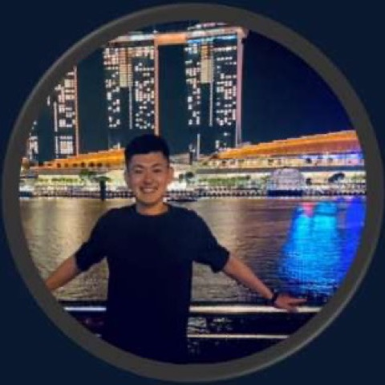
参加イベント：大阪3回、シンガポール1回、ジャカルタ1回、タイ1回
参加して2ヶ月ですでに2件も案件のご紹介をいただけました！いつもありがとうございます！事業の方向性に悩んでいましたが、自分ではわからなかった強みを見出していただき方向性が定まりました！更に、その方向性ですでにうまくいっている人との食事会も設定していただき感謝しかないです！！！
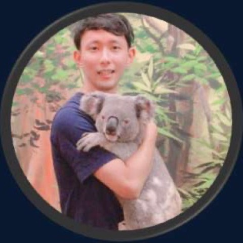
参加イベント：東京4回、シンガポール4回、ジャカルタ2回
これまで自社事業の納品難易度が高く仲間集めに苦戦していましたが、優秀な方を仲間にすることができ、会社の成長確度を上げることができる基礎ができました。意思決定の方法を誤り無駄なコストを生みまくってしまっていましたが、現状から最適な道しるべを示していただくことで利益を増やすための最短距離で進めるようになり、行動に無駄がなくなりました。
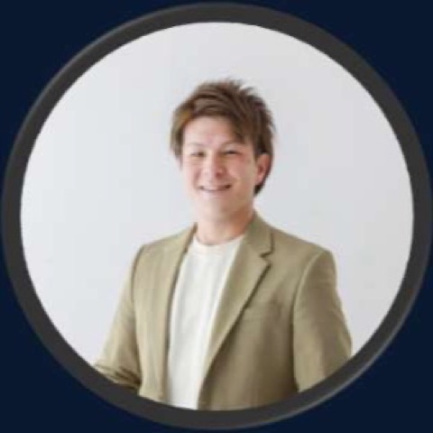
参加イベント：シンガポール3回
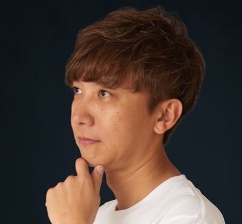
嶋 基裕Motohiro Shima
株式会社アイランド・ブレイン 創業者／会長
20歳で起業。きっかけは、脱サラして起業した父親が事業に失敗し窮地に追い込まれたこと。それを救済するために父親へ営業支援を決め、実施し成功。
これを見た人達から依頼が殺到。当時の日本に営業支援はなかったが、確かなニーズを確信し法人化を決意。23歳で株式会社アイランド・ブレインを設立。
13年間社長を務め、14年目から会長へ。同時にシンガポールへ移住。現在はグループ9社の社長・役員へのメンター＆経営サポートと、海外展開を強化中。
1981年1月31日生まれ／愛知県出身／シンガポール在住。
一年を通じて、日本と世界で出会いの場が待っています。
※ オフィシャルイベントです。場所が変更になることもあります。スケジュールにないイベントを追加で開催することもあります。
Shima Salon は招待制・紹介制を採用しています。質の高いメンバーシップを維持するため、すべての入会希望者は嶋による面談を経て、承認された方のみ入会可能です。
まずはLINEから、サロン入会希望のご連絡をください。
嶋とのオンライン面談と食事会への参加。相互理解を深め相性を確認します。
面談を経て承認された方のみ入会可能。契約・決済手続きへ。
契約完了後、Shima Salon へご招待します。
月額会費
3万円
（税抜）
日本だけでなく世界中に、本音で語り合える仲間が待っています。
まずはLINEで、最新の開催情報と体験食事会のご案内を受け取ってください。
登録無料／入会は招待制・面談制です